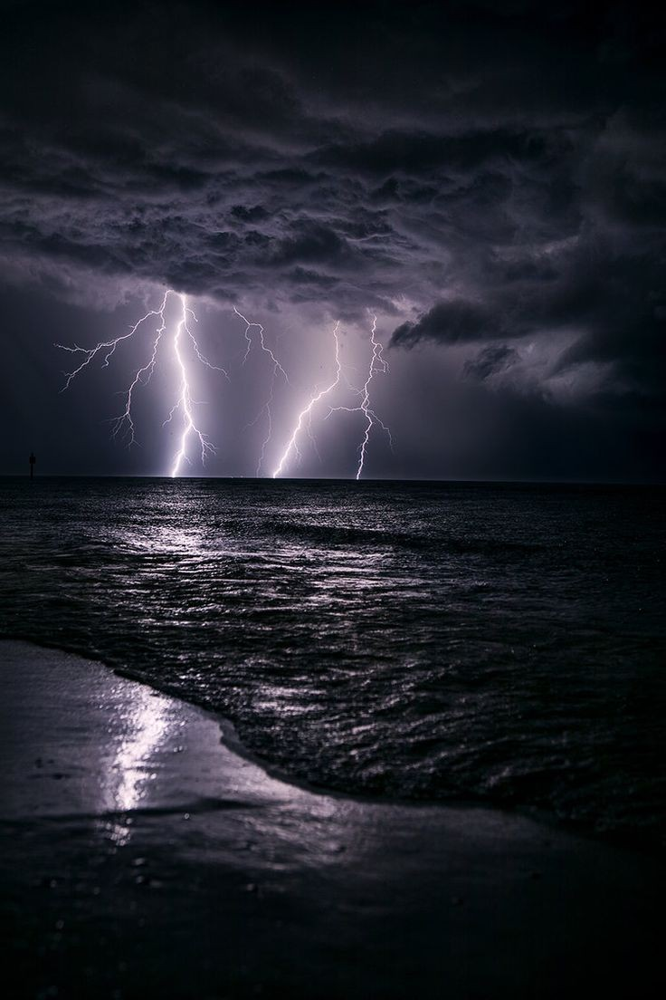

Petir, kilat, dan halilintar adalah gejala alam yang biasanya muncul pada musim hujan saat langit memunculkan kilatan cahaya sesaat yang menyilaukan. Beberapa saat kemudian disusul dengan suara menggelegar yang disebut guruh. Perbedaan waktu kemunculan ini disebabkan adanya perbedaan antara kecepatan suara dan kecepatan cahaya.
